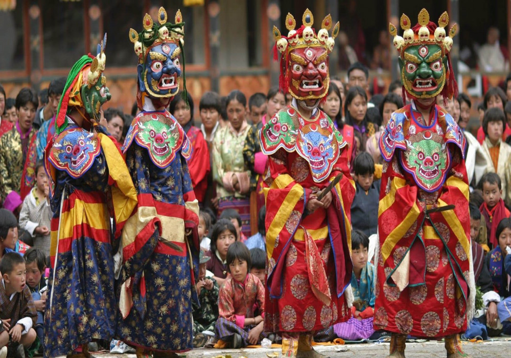
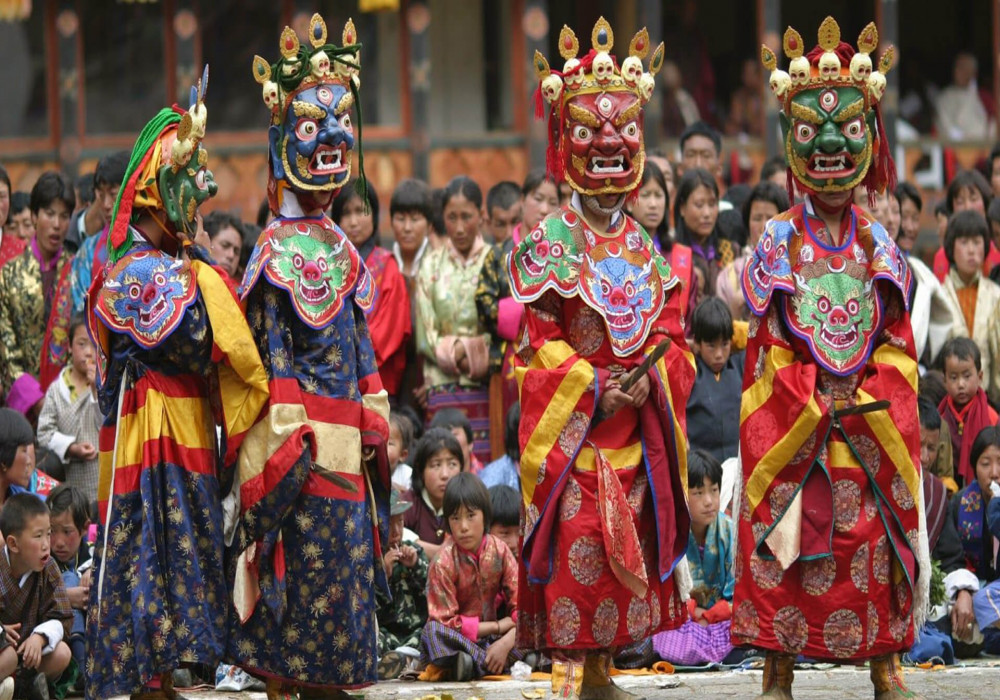

The traditions of Arunachal Pradesh are deeply rooted in the customs and lifestyles of its many indigenous tribes. With over 26 major tribes and numerous sub-tribes, each with their own distinct practices, the state offers a rich and diverse cultural heritage that reflects a strong connection to nature, spirituality, and community life. These traditions have been preserved for centuries and are an integral part of the region's identity.
Tribal Structure and Community Life:
The tribal communities of Arunachal Pradesh are known for their egalitarian and close-knit social structures. Most tribes have a clan-based system, where decisions are made collectively, and every member of the community is expected to participate in social and cultural activities. The village chief, often a respected elder, plays a crucial role in maintaining harmony and resolving disputes.
The Nyishi, Apatani, Monpa, Adi, and Mishing are some of the largest and most prominent tribes in the state. Each tribe follows a set of traditions and customs that reflect their environment, beliefs, and way of life.
Nature Worship and Animism:
Many tribes in Arunachal Pradesh practice animism, believing that natural elements such as mountains, rivers, trees, and animals are inhabited by spirits. These spirits are worshipped and revered as deities. Rituals and festivals are often centered around agriculture, hunting, and the changing seasons.
For instance, the Nyishi tribe worships Donyi-Polo, the Sun-Moon god, symbolizing balance and harmony between nature and humans. Similarly, the Apatani tribe performs rituals to appease nature deities for a good harvest.
Festivals:
Festivals are a vibrant and integral part of the traditions of Arunachal Pradesh, often associated with the agrarian cycle. These festivals serve as a time for celebration, thanksgiving, and community bonding, marked by dances, songs, and feasts.
- Losar: Celebrated by the Monpa and Sherdukpen tribes, Losar marks the Tibetan New Year and is a time of spiritual renewal. The festival includes rituals to cleanse homes, offerings to deities, and performances of traditional dances.
- Solung: Celebrated by the Adi tribe, Solung is a harvest festival that expresses gratitude to the gods for a bountiful harvest. The festival includes various ceremonies, traditional dances like Ponung, and feasts.
- Dree Festival: Celebrated by the Apatani tribe, the Dree Festival is an agricultural festival where the people offer prayers for protection against natural calamities and to ensure good crop production.
 

Traditional Attire and Ornaments:
The traditional attire of Arunachal Pradesh is colorful and varies from tribe to tribe. These garments are often handwoven and intricately designed using natural fibers like cotton and wool. Women typically wear wrap-around skirts and blouses, while men wear loincloths or long coats.
Each tribe has its own style of dressing:
- Apatani women are known for their unique facial tattoos and large nose plugs, though this tradition has become less common today.
- Nyishi men are famous for their traditional headgear adorned with hornbill beaks, symbolizing strength and bravery.
Ornaments made from silver, brass, and beads are also important, with necklaces, earrings, and bracelets worn by both men and women during festivals and special occasions.
Arts and Crafts:
Traditional crafts form an essential part of Arunachal's cultural heritage. Most tribes are skilled in weaving, bamboo craft, and pottery. Handwoven textiles feature intricate patterns and bright colors, which are passed down from generation to generation. Bamboo and cane are also widely used to make furniture, baskets, and even houses, reflecting the tribes' sustainable use of natural resources.
Traditional Dances and Music:
Music and dance are important components of life in Arunachal Pradesh, used to mark festivals, weddings, and other important occasions. Each tribe has its own traditional dances and musical instruments. For example, the Ponung dance of the Adi tribe is performed by women during festivals, while the Ajilamu dance of the Monpa tribe tells the stories of their gods and ancestors. The music typically involves drums, cymbals, and flutes.
Conclusion:
The traditions of Arunachal Pradesh are a beautiful reflection of its diverse tribal communities, rooted in nature worship, community participation, and a deep sense of identity. While modern influences have begun to shape certain aspects of life, the people of Arunachal Pradesh continue to honor their customs and preserve their ancient practices, making it one of the most culturally rich states in India.